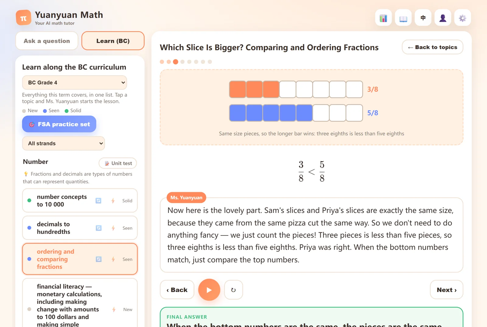
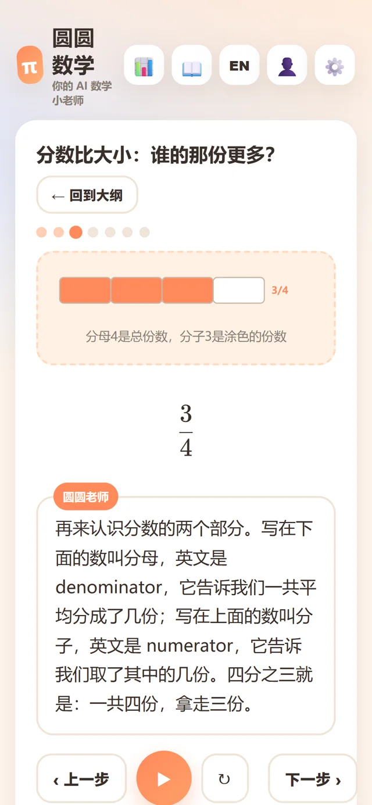
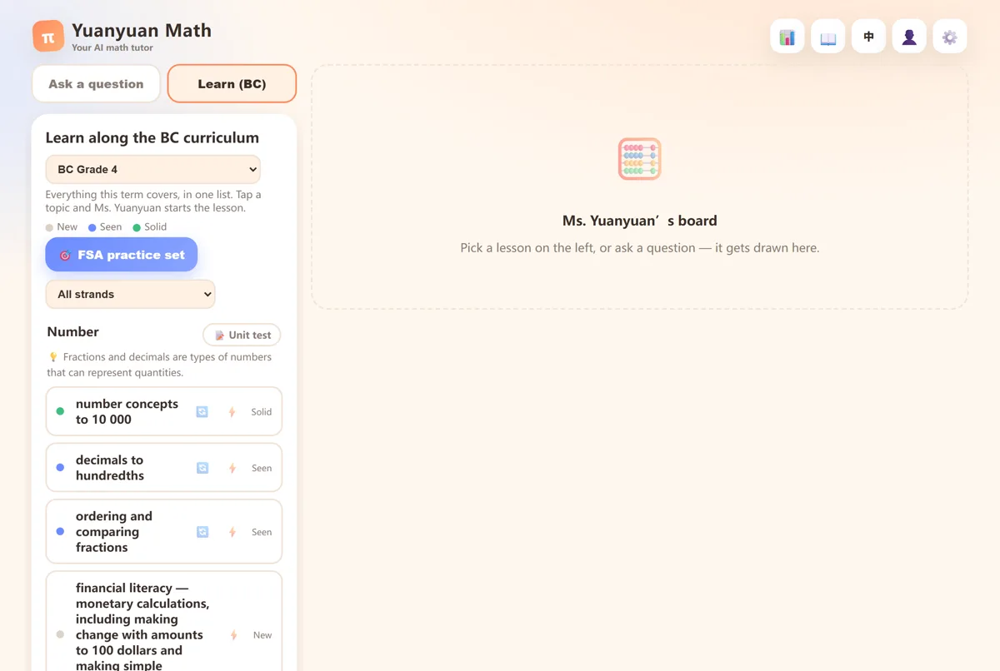
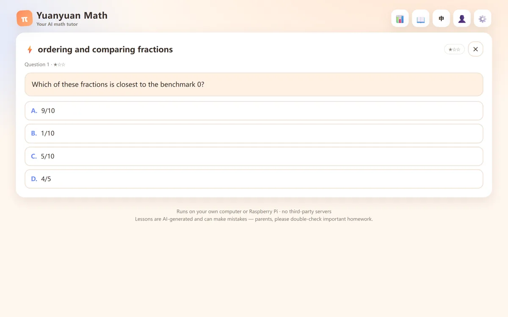
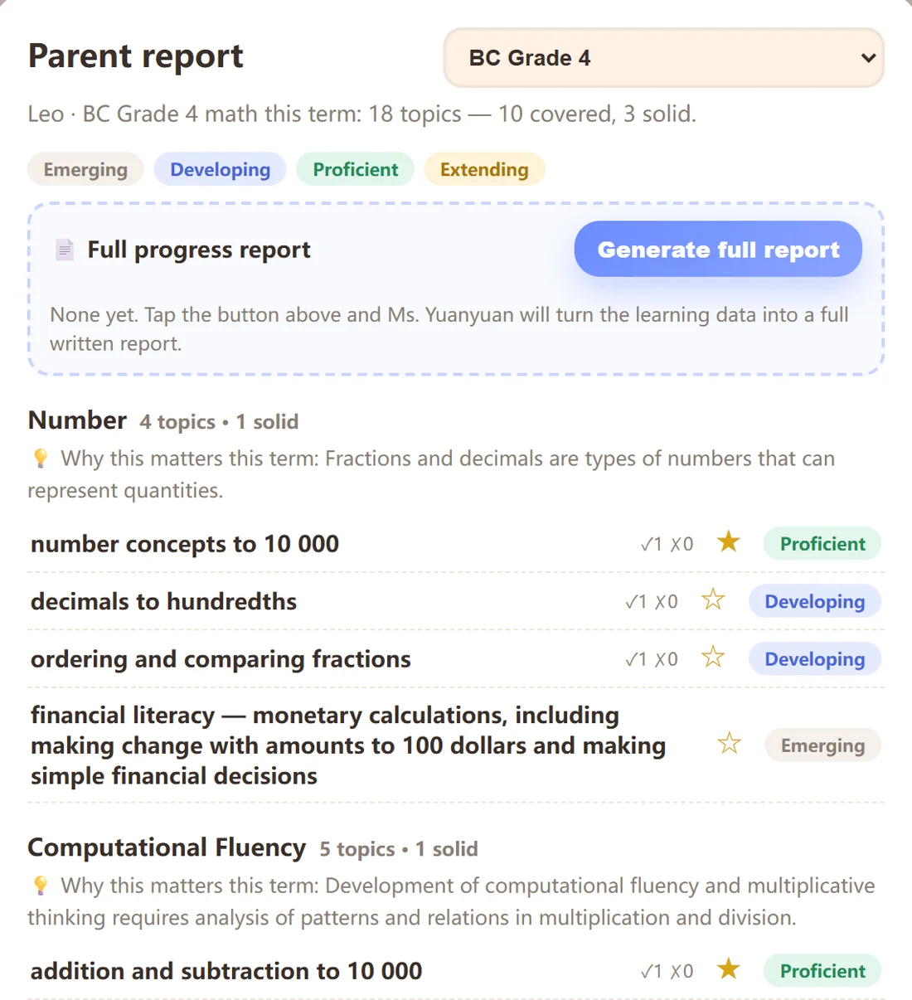
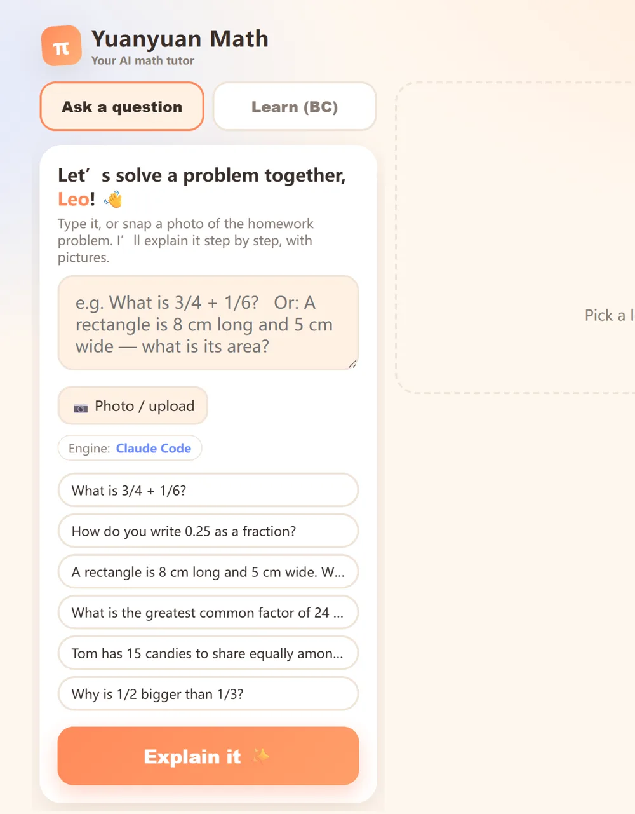

A private AI math tutor that lives on your own computer 住在自己电脑里的 AI 数学家教
234 pre-generated lessons that follow the official BC math curriculum, from Grade 4 up to Pre-calculus 12 — explained step by step, with pictures and a natural voice, in English and 中文. No cloud accounts, no subscription, and your child's data never leaves home. 234 节预生成课程，紧跟 BC 官方数学大纲，从四年级一路到 Pre-calculus 12——一步步讲、配图、真人感语音朗读，中英双语。不用注册任何云服务，没有订阅，孩子的学习数据不出家门。
No install, no signup — kid PIN 1234, parent login demo / demo1234. BC lessons with natural voice, same as the installer. No AI engine, so no photo questions there.
不用装、不用注册——孩子端 PIN 1234，家长账号 demo / demo1234。BC 大纲课程带真人感语音，跟装机版一样。没有 AI 引擎，拍照出题这上面用不了。


All pre-generated and bundled with the installer. Everything above works offline, before any AI engine is set up. 全部预生成、随安装包发货。上面这些装完就能用——一个 AI 引擎都不用配。
What's in the box开箱即教
Teaches right out of the box 装完就开讲，不用折腾
Install, double-click, and lessons start — no Node, no API keys, no internet needed. Kids tap their name, enter a PIN, and Ms. Yuanyuan takes it from there. 安装、双击、开讲——不用装 Node，不用填 API key，断网也行。孩子点自己的名字、输入 PIN，剩下的交给圆圆老师。

Learn along the official BC curriculum跟着 BC 官方大纲学
Pick a grade (4–9) or a high-school course (FMP 10, Pre-calculus 11, Pre-calculus 12) and the whole term is laid out strand by strand — unit by unit for high school — in the curriculum's official wording. Grey means new, blue means seen, green means solid — solid takes correct answers on two different days, not one lucky afternoon. 选好年级（4–9）或高中课程（FMP 10、Pre-calculus 11、Pre-calculus 12），这学期五大主线（高中按单元）的知识点一目了然，条目用的是大纲官方原文。灰点没学、蓝点讲过、绿点扎实——「扎实」要在两个不同的日子都答对才算，不靠一个下午的手气。
Every strand has a unit test; Grades 4 and 7 also get FSA-style practice sets for BC's province-wide assessment. 每条主线配一张单元测；4、7 年级还有 FSA 模拟练习，对应 BC 全省统测。

Quizzes that mean something闯关不是做做样子
Each topic has a ⚡ quiz whose difficulty steps up and down as your child answers. Marking happens on the server against the stored answer key — whatever the browser claims doesn't count. Passing marks the topic solid. 每个知识点都有 ⚡ 闯关，边答边升降难度。判分在服务器端对着存好的答案来——浏览器说了不算。通关直接把知识点标成扎实。
Miss a question on any test and it turns into a full lesson on that topic with one tap. 测试里错的每道题，一键就能变成一节针对那个知识点的课。

Parent reports that speak report-card家长报告，说成绩单的语言
A parent-only 📊 view rates every topic Emerging / Developing / Proficient / Extending — the same four-tier language as a real BC report card — ready to print for a parent-teacher conference. 家长专属的 📊 报告，把每个知识点评成 Emerging / Developing / Proficient / Extending——和 BC 学校成绩单同一套四档说法，打印出来就能带去家长会。
With an AI engine, Ms. Yuanyuan also writes a full narrative report — but every number in it is computed by the server, never invented by the AI. 配上 AI 引擎，圆圆老师还能写整份书面报告——但里面每个数字都由服务器算好，AI 只写评语，编不了数。

Ask it anything (this part wants an engine) 自己的题随便问 （这部分需要引擎）
Type a problem or snap a photo of the homework, and it's explained step by step with pictures, read aloud — then the answer to check, plus one practice problem of the same kind. 打字，或者拍一张作业照片，圆圆老师一步步讲、配图、朗读——最后给核对答案，再留一道同类练习。
This is what needs an AI engine. It borrows whichever tool is already signed in on your machine — Claude Code, Gemini CLI, or free offline Ollama — and no API key ever goes into the webpage. 这是唯一需要 AI 引擎的部分。它直接借用你电脑上已登录的工具——Claude Code、Gemini CLI，或免费离线的 Ollama——API key 永远不进网页。
The details细节
Built the way parents wish software was built按家长希望的方式做软件
The boring parts are the point: where the data lives, who can see it, and what happens when the AI is wrong. 无聊的部分才是重点：数据放在哪、谁能看到、AI 讲错了怎么办。
Private by design隐私是默认值
Accounts are a JSON file on your machine. Registration closes itself after the first parent. Passwords are scrypt-hashed; kids sign in with a 4–6 digit PIN. 账号就是你机器上的一个 JSON 文件。第一位家长注册完，注册通道自动关闭。密码 scrypt 加盐存储，孩子用 4–6 位 PIN 登录。
Bilingual to the bone双语到骨子里
One tap switches UI, lessons, examples and voice between English and Chinese. Chinese lessons weave in the English terms kids hear at school — “小数, called decimal in English class”. 一键切换界面、课程、例题和语音。中文课里自然带出学校里用的英文术语——「小数，英文课上叫 decimal」。
A voice that isn't robotic不是机器人腔
1,075 natural-voice clips (CosyVoice 2) ship in the box — the same warm voice for both languages. If a clip is ever missing, browser speech steps in; a lesson is never blocked. 随包附带 1,075 条 CosyVoice 2 预合成语音，中英同一个温柔声线。缺了哪条就退回浏览器语音——讲课永远不会被卡住。
Diagrams that can't be wrong图示永远画不错
Fraction bars, number lines, grids and bar models are drawn by code. The AI only chooses which diagram to use and fills in the numbers. 分数条、数轴、方格、条形图全部由程序绘制。AI 只负责挑用哪张图、填哪些数。
Any engine — or none引擎随便换，没有也行
Works with Claude Code, Gemini CLI, Codex, Grok, any OpenAI-compatible API, or free local Ollama. The whole curriculum teaches fine with no engine at all. 支持 Claude Code、Gemini CLI、Codex、Grok、任何 OpenAI 兼容 API，或免费本地 Ollama。整套大纲课没有引擎也照常教。
Runs on a Raspberry Pi树莓派也带得动
A Pi 4 with 2 GB is plenty — the server is zero-dependency Node. Add free Tailscale and kids can use it safely from anywhere. Pi 4 / 2GB 就绰绰有余——服务器是零依赖 Node。配上免费的 Tailscale，孩子在外面也能安全地用。
Install安装
Up and running in three steps三步开工
No Node, no admin rights, no internet needed after the download. 不用装 Node，不要管理员权限，下载完断网也能装。
Download下载
Grab the package for your system from Releases: a Windows installer, a no-install zip, or a macOS app. 去 Releases 拿对应系统的包：Windows 安装版、免安装 zip，或 macOS 应用。
Double-click双击
Next-next-done. It installs into your own user folder and puts an icon on the desktop. 下一步下一步完成。装进你自己的用户目录，桌面放好图标。
Meet Ms. Yuanyuan见圆圆老师
Your browser opens on localhost:8434. Create a parent account, set your child's PIN, and lessons start. iPads and phones on the same Wi-Fi work too.
浏览器自动打开 localhost:8434。建一个家长账号、给孩子设个 PIN，开讲。同一 Wi-Fi 下的平板和手机也能用。
⚠️ First run: the build isn't code-signed (certificates cost real money every year), so the system warns once. Windows: click “More info → Run anyway”. macOS: drag the app into Applications first, then run xattr -dr com.apple.quarantine "/Applications/圆圆数学.app" once in Terminal — or double-click it, let it get blocked, then System Settings → Privacy & Security → “Open Anyway” (the old right-click → Open trick was removed in macOS 15). You only do this once.
⚠️ 首次运行：安装包没买代码签名证书（证书每年都要花不少钱），系统会拦一次。Windows 点「更多信息 → 仍要运行」。macOS 先把 app 拖进「应用程序」，再在终端跑一次 xattr -dr com.apple.quarantine "/Applications/圆圆数学.app"；不想用终端就双击让它被拦一次，到 系统设置 → 隐私与安全性 → 点「仍要打开」（「右键 → 打开」macOS 15 起已被移除）。只需要这一次。
Prefer to run from source?想从源码跑？
The server is zero-dependency Node 18+ — there is no npm install. The full lesson pack (234 lessons, 88 unit tests, the BC curriculum data) is committed to the repo, so a fresh clone teaches fine.
服务器是零依赖的 Node 18+——连 npm install 这一步都没有。完整课程包（234 节课、88 张单元测、BC 大纲数据）就在仓库里，clone 下来就能开讲。
git clone https://github.com/liukai1919/AI-tutor.git
cd AI-tutor
node server.js # open http://localhost:8434